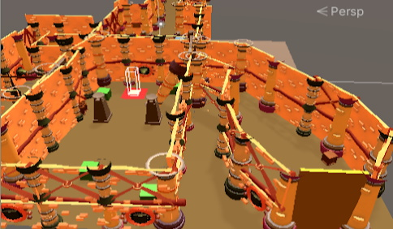
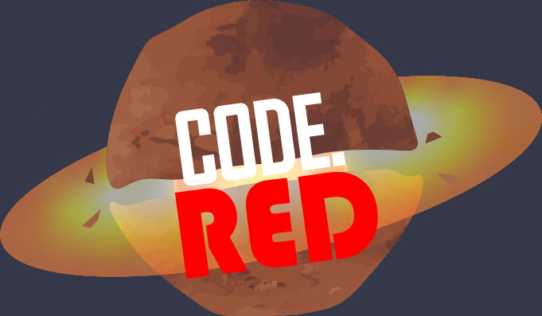
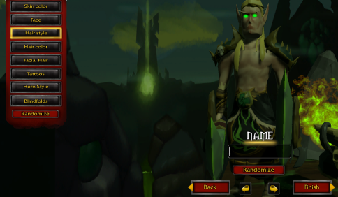
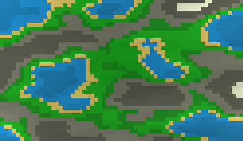

I personally worked mostly on a movement, UI, the sound and ambience on top of that helping where I could with traps and map making
I coded the pendulum trap, UI and the movement. Of these im most proud of the pendulum trap. Altho it has the least script its also just a neat little script.
There were some hiccups with making this but overall im happy with what we achieved. We had good teamwork, met daily and had good morale throughout the entire project.
On top of that our planning through trello was done very well
Heres a sample of the code
void Update()
{
var hinge = GetComponent();
var motor = hinge.motor;
timeLeft -= Time.deltaTime;
if(timeLeft < 0)
{
motor.targetVelocity = turned ? 200 : -200;
turned = !turned;
audioData.Play(0);
timeLeft = resetTime;
}
hinge.motor = motor;
hinge.useMotor = true;
} On top of that you had the UI mostly done by me and the movement also mostly done by me.
Github
The progress on this project was without a doubt tough. With a project that was supposed to have a minimum of 2 developers I ended up being the only one and I very much felt unprepared and incapable at the beginning.
However through these hardships I ended up learning a lot by having to do all the coding myself
The end result could be better but I am happy with the end result.
Heres a sample of the code
public void Attract (Transform body)
{
Vector2 gravityUp = (body.position - transform.position).normalized;
Vector2 bodyUp = body.up;
body.GetComponent().AddForce(gravityUp * gravity);
Quaternion targetRotation = Quaternion.FromToRotation(bodyUp, gravityUp) * body.rotation;
body.rotation = Quaternion.Slerp(body.rotation, targetRotation, 500 * Time.deltaTime);
} 
This project was a lot of fun to work on and had great people in it. Our goal was to remake the character selection screen from warhammer with working hair
I personally only worked on getting the UI to work.
We ended up finishing it and making it work well within timeframe and I learned a lot about teamwork in this project and where to improve
Heres a sample of the code
if (hair == null)
{
// spawns hair at the right position and with the right rotation
hair = Instantiate(hairStyle[0], hairSpawnPoint, false);
hair.transform.position = hairSpawnPoint.position;
hair.transform.rotation = hairSpawnPoint.rotation;
// hair.AddComponent();
// Debug.Log("true");
}
else
{
Destroy(hair);
HairSelection();
} 
This is a self project which I did in an attempt to just generally increase my knowledge of coding.
With the goal being a randomly generated map with clouds and birds flying around I started with looking up how to generate the map itself
I found out that using randomly generated noise maps which could then be transformed into a mesh map would work great and am currently learning how to use it properly after which I want to move on to the randomly generated clouds and eventually the randomly moving birds.
Heres a sample of the code
{
float sampleX = (x - halfWidth) / scale * frequency + octaveOffsets[i].x;
float sampleY = (y - halfHeight) / scale * frequency + octaveOffsets[i].y;
float perlinValue = Mathf.PerlinNoise(sampleX, sampleY * 2 - 1);
noiseHeight += perlinValue * amplitude;
amplitude *= persistance;
frequency *= lacunarity;
}